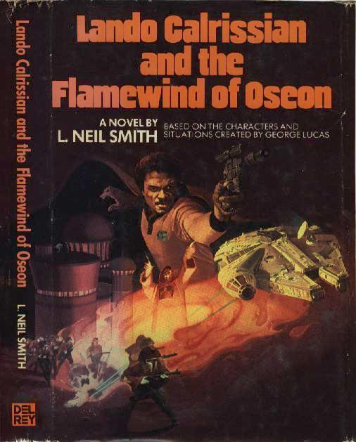

Lando Calrissian and the Flamewind of Oseon
by L. Neil Smith
Youthful adventures of Star Wars' famous gambler before Han Solo won the Millenium Falcon from him. Re-released in omnibus edition titled The Lando Calrissian Adventures, Summer, 1994.
"Based on the characters and situations created by George Lucas"
New York: A Del Rey Book Published by Ballantine Books, 1983
151 pages, mass-market paperback
Library of Congress Catalog Card Number: [not listed]
ISBN [not listed] [Science Fiction Book Club Edition]
Dust jacket